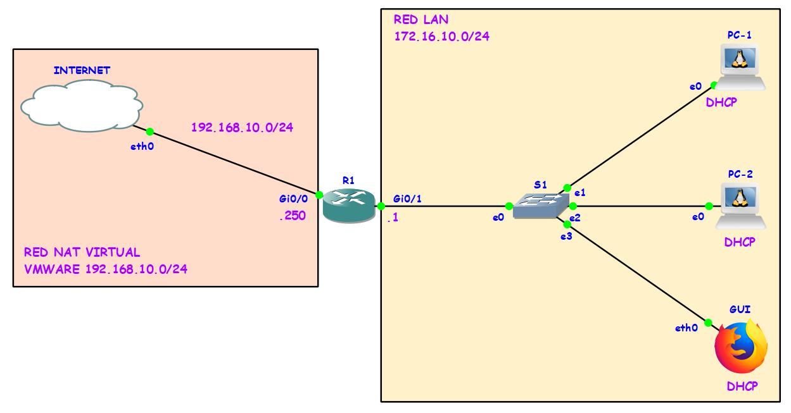
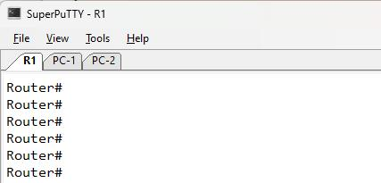

Topología básica
Haremos una topología básica con un router Cisco, en la que una interface está conectada a la red local 172.16.10.0/24 y a su vez por va a asignar direcciones dinámicas a los tres clientes. Por el otro lado la interface g0/0 estará conectado a mi interface virtual, que simulará una salida a internet. Para eso se configurará NAT en el router. Veremos que los clientes luego podrán tener acceso a internet.
Primero conectaremos los dispositivos tal como se muestra en la figura. En este caso estamos haciendo uso del software GNS3, en donde los elementos que se ven son un router, switch, 3 máquinas clientes basados en Linux (son contenedores disponibles en la página de GNS3, muy útiles a la hora de hacer pruebas rápidas sin necesitar de estar integrando máquinas virtuales ya que consumen mucha RAM y CPU.)
Ahora pasamos a configurar el router. Entramos en la consola, para mi caso estoy usando SUPERPUTTY, que me permite abrir varias sesiones al mismo tiempo de manera ilimitada. Como se ve en la figura también se muestra las terminales de las pc's clientes.
